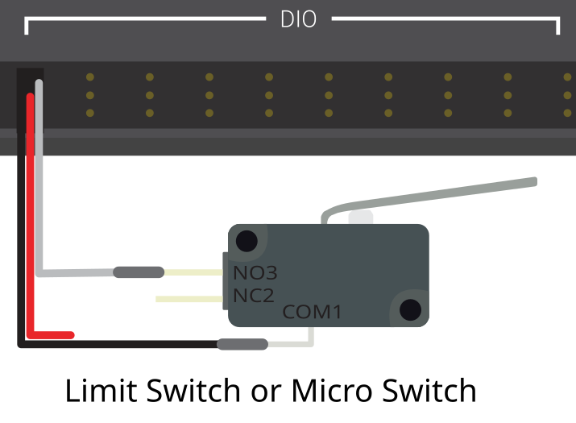

Lab 4: Stop at a Limit Switch#
Why it matters#
So far the robot has only done what the driver told it. Now it starts sensing the world.
A limit switch is the simplest sensor there is: pressed or not pressed. Robots use them everywhere to know when a mechanism has reached the end of its travel: an elevator at the bottom, an arm against its hard stop, a climber fully retracted. Running a motor into a hard stop without stopping can strip gears, snap belts, or burn out the motor.
In this lab you'll read a limit switch, show it on the dashboard, and make the motor stop by itself the moment the switch is pressed.
Before you start: finish Lab 3. You'll add to the same TestBed project. Lesson 8 covers sensors in more depth. Lesson 4.3 explains how limit switches are wired, including NO vs. NC.
Read this#
Walkthrough#
How a limit switch talks to the roboRIO#
A limit switch connects to one of the roboRIO's DIO (digital input/output) ports. Each DIO port has three pins: signal, 5 V, and ground. A basic limit switch uses two of them: signal and ground.
Inside the roboRIO, the signal pin is gently pulled up to "high" (true). When the switch closes, it connects signal to ground, which pulls it "low" (false).
| Switch | Wired as "normally open" (NO) | What get() returns |
|---|---|---|
| Not pressed | Circuit open | true |
| Pressed | Circuit closed to ground | false |
Pressed reads false
This surprises everyone the first time. With the usual wiring, get() returns false when the switch is pressed. That's why the code below uses ! (not). Always check on the dashboard instead of guessing.

A limit switch on a DIO port. Only signal and ground are used. From the WPILib docs, Digital Inputs - Hardware (CC BY 4.0).
The test bed's switches have both NO (normally open) and NC (normally closed) contacts. If yours is wired to NC, the logic flips: pressed reads true. The dashboard test in Step 3 tells you which you have.
On the test bed, the switch isn't attached to a mechanism, so you will be the mechanism: pressing the switch by hand is like an arm reaching its hard stop.
Step 1: Constants#
Find which DIO port the switch is wired to (follow the wire to the roboRIO). Add a new class to Constants.java:
public static class kSensorConstants {
public static final int LimitSwitchDio = 2; // the DIO port your switch uses
}
Step 2: Add the switch to the subsystem#
Open SpinBrushlessMotorSubsystem.java. Add the switch next to the motor:
private final DigitalInput m_limitSwitch =
new DigitalInput(Constants.kSensorConstants.LimitSwitchDio);
| Part | What it means |
|---|---|
DigitalInput |
WPILib's class for anything on a DIO port that's simply on or off |
new DigitalInput(2) |
"Watch DIO port 2." The port number comes from Constants. |
m_limitSwitch.get() |
Reads the port right now: true or false |
Import edu.wpi.first.wpilibj.DigitalInput. Then add a method that says what the switch means:
/** True when the limit switch is pressed. */
public boolean isLimitPressed() {
return !m_limitSwitch.get(); // pressed pulls the signal low, so flip it
}
public boolean: the method answers a yes-or-no question,trueorfalse.!means "not": it flipstruetofalseand back. With the usual wiring, the port readsfalsewhen the switch is pressed, so!turns that into "pressed =true."- The
/** ... */comment above it is a Javadoc comment. VS Code shows it when you hover overisLimitPressed()anywhere in your code.
Name it for what it means
isLimitPressed() is much clearer than getSwitch(). Everywhere else in your code, if (isLimitPressed()) reads like English and hides the "pressed is false" wiring detail in one place.
Add it to periodic() so you can see it:
m_telemetry.log("Limit Pressed", isLimitPressed());
Step 3: Check it on the dashboard#
Deploy (the robot can stay disabled). In Elastic, find Limit Pressed in Telemetry → Brushless and show it as a Boolean Box.
- Not touching the switch: shows false
- Holding the switch down: shows true
If it's backward, your switch is wired NC. Remove the ! in isLimitPressed() and deploy again. Getting this right now saves confusion later.
Step 4: Spin until the switch is pressed#
Add a command that runs the motor and stops by itself when the switch is hit:
/** Spins until the limit switch is pressed, then stops. */
public Command spinUntilLimitCommand(double speed) {
return spinMotorCommand(speed)
.until(this::isLimitPressed)
.withName("Spin Until Limit");
}
| Part | What it does |
|---|---|
spinMotorCommand(speed) |
Lab 1's command: spin, and stop when it ends |
.until(this::isLimitPressed) |
Checks isLimitPressed() every 20 ms. The moment it's true, the command ends, and spinMotorCommand's end action stops the motor. |
this::isLimitPressed |
A method reference: "call this subsystem's isLimitPressed() whenever you need the answer." It's the short way to write () -> isLimitPressed(). |
Bind it in RobotContainer:
// D-pad up: spin until the limit switch is pressed
m_controller.povUp().onTrue(
m_spinBrushlessMotorSubsystem.spinUntilLimitCommand(
Constants.kBrushlessConstants.BrushlessMotorSpeed));
It's onTrue because the command ends by itself. Tap once and let it go.
Test it:
- Enable. Tap D-pad up. The motor spins.
- Press the limit switch by hand. The motor stops immediately.
- Tap D-pad up while holding the switch down. What happens? Why?
Step 5: Don't even start if you're already at the limit#
In step 3 of the test, the command started, saw the switch already pressed, and ended in the same loop. That works, but it's cleaner to say "don't start at all":
public Command spinUntilLimitCommand(double speed) {
return spinMotorCommand(speed)
.until(this::isLimitPressed)
.unless(this::isLimitPressed) // don't start if already pressed
.withName("Spin Until Limit");
}
.unless(condition) checks the condition once, when the command is about to start. If it's true, the command is skipped entirely: it never starts, so the motor never twitches. .until and .unless look alike but answer different questions: .until is "when should I stop?", and .unless is "should I start at all?"
Step 6: A trigger made from a sensor#
Buttons aren't the only triggers. Any true/false check can start a command. Add this in configureBindings():
// Whenever the limit switch becomes pressed, print a message
new Trigger(m_spinBrushlessMotorSubsystem::isLimitPressed)
.onTrue(Commands.print("Limit switch hit!"));
| Part | What it does |
|---|---|
new Trigger(...) |
Makes a trigger from any true/false check, not just a button |
m_spinBrushlessMotorSubsystem::isLimitPressed |
The check: is the switch pressed? The trigger asks every 20 ms. |
.onTrue(...) |
Runs the command each time the check changes from false to true |
Commands.print("...") |
A ready-made command that prints a message to the console and ends |
Import Trigger and Commands if needed. Deploy, open RioLog, and press the switch. The message prints once each time the switch goes from not-pressed to pressed, not 50 times a second while you hold it. That's what onTrue means: it fires on the change.
Step 7: Commit#
git add .
git commit -m "Lab 4: limit switch"
When it doesn't work#
| Problem | Likely cause |
|---|---|
| Dashboard always shows the same value | Wrong DIO port in Constants, or the wire isn't on the signal pin |
| Value is backward | The switch is wired NC. Remove the !. |
| Motor doesn't stop when the switch is pressed | .until is missing, or isLimitPressed() returns the wrong value |
| "Limit switch hit!" prints over and over | You used whileTrue instead of onTrue, or the switch is bouncing (see the last exercise) |
Finished code
Stuck, or missed a lab? lab04-limit-switch on GitHub is the complete project as it looks at the end of this lab. It's a full WPILib 2026 project you can open in VS Code, build, and deploy. Try to finish the lab yourself first.
Try it#
- Get Limit Pressed reading correctly in Elastic
- Spin until the switch is pressed with D-pad up
- Hold the switch, then tap D-pad up. Explain what happens with and without
.unless. - Use the second limit switch on the test bed. Make D-pad down spin backward until it's pressed, like an elevator going down to its bottom switch.
- Make A (from Lab 1) also refuse to spin while the switch is pressed
- Switches can "bounce," flickering on and off for a few milliseconds when pressed. Add
.debounce(0.05)to theTriggerfrom Step 6. What does it change?
Check yourself#
Why does a pressed limit switch usually read false?
The roboRIO pulls the signal pin high when nothing is connected. Pressing a normally-open switch connects the signal to ground, which pulls it low.
Why put the ! inside isLimitPressed() instead of everywhere you check the switch?
So the wiring detail lives in one place. The rest of the code reads clearly, and if the wiring changes, you fix one line.
What does .until(this::isLimitPressed) do?
It checks the switch every loop and ends the command the moment the switch is pressed. Ending the command runs its end action, which stops the motor.
What's the difference between .until(...) and .unless(...)?
.until ends a running command when the condition becomes true. .unless stops the command from starting at all if the condition is already true.
Why does the print in Step 6 happen once instead of 50 times a second?
onTrue fires when the trigger changes from false to true, not while it stays true.